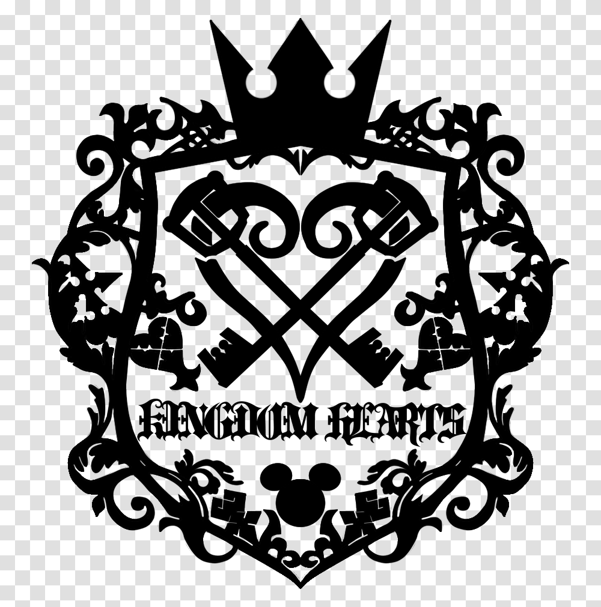
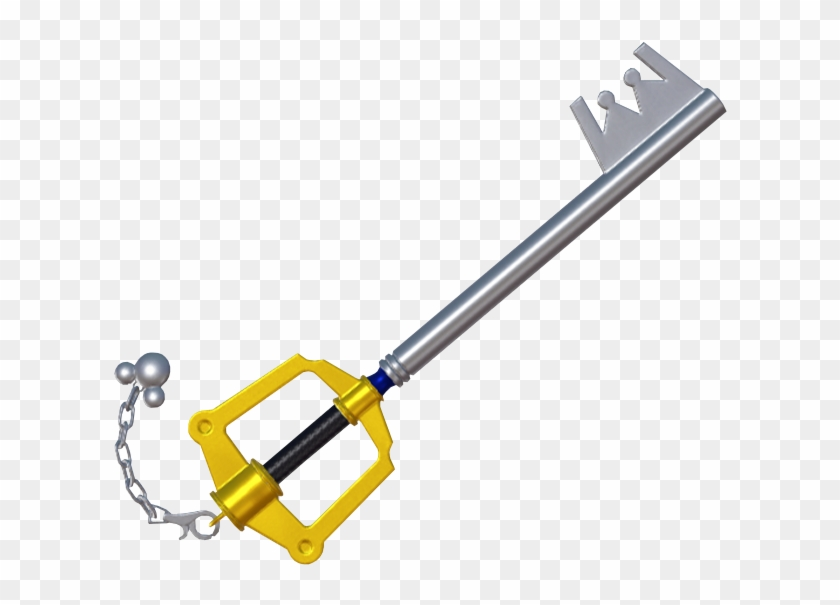
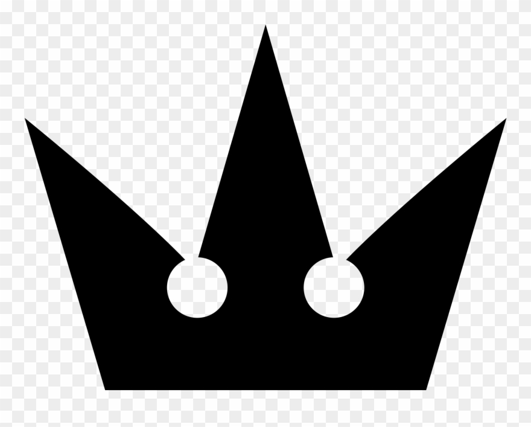
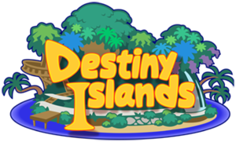
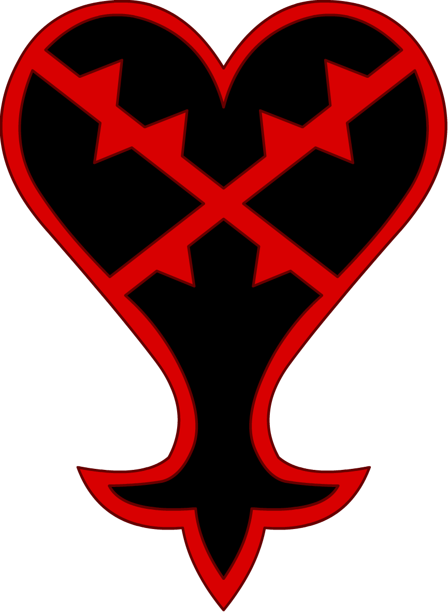
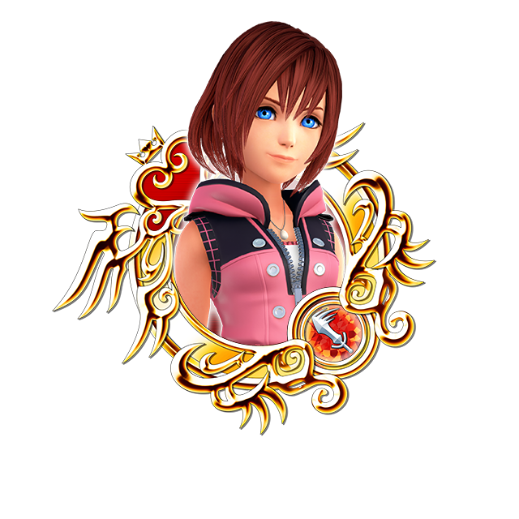
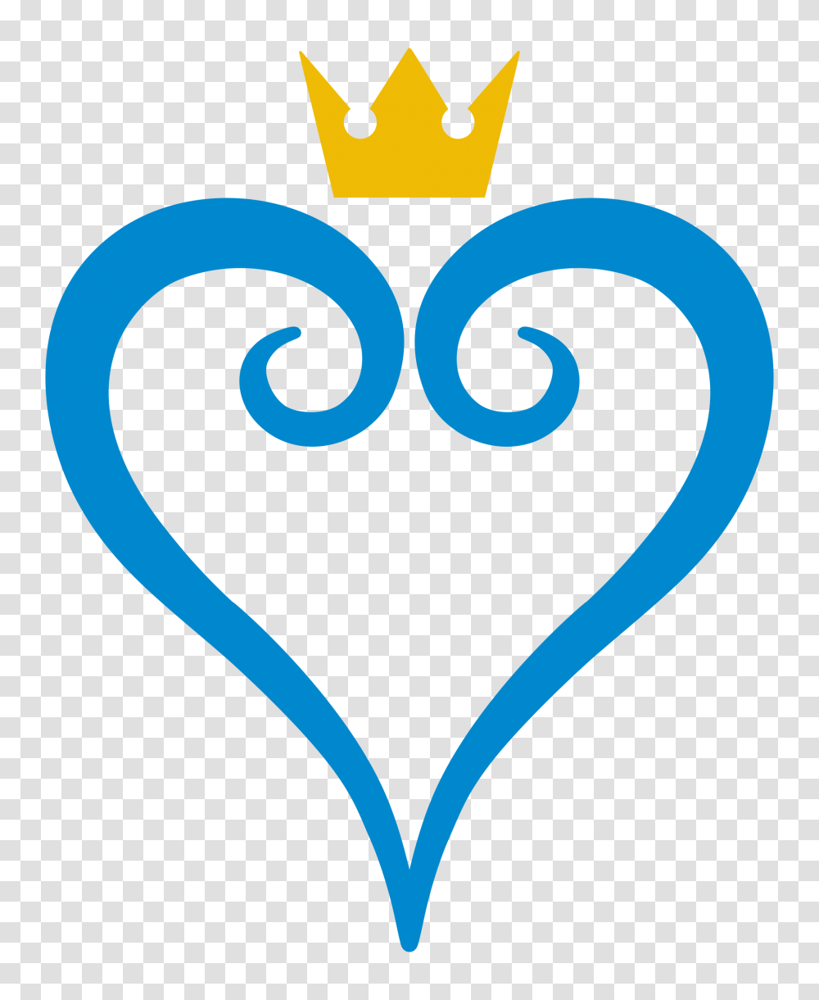
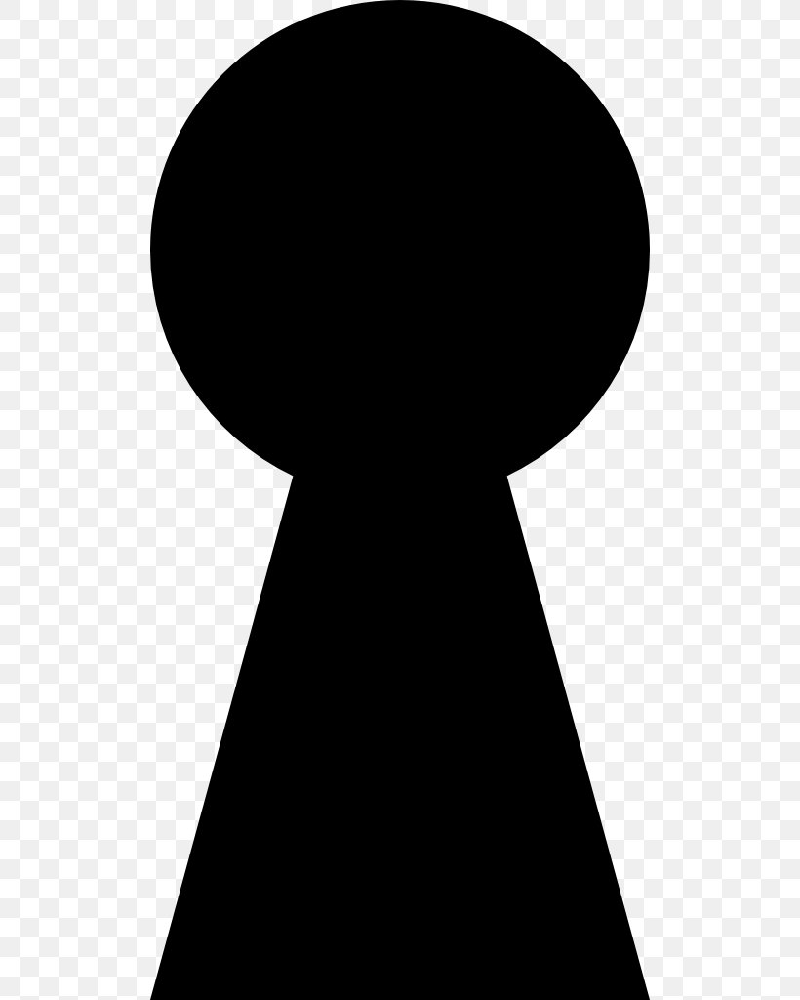

How far will Sora go into Kingdom Hearts in the future?
Theory: Sora may be connected to the Master of Masters (MoM), possibly a reincarnation or a piece of him.
Evidence:
-  Sora's heart is a key element in the series, and his connection to other characters often revolves around the heart.
-  The Keyblade, which Sora wields, is a significant symbol in the Kingdom Hearts universe, representing the power to unlock hearts and worlds.
-  The Kingdom Hearts itself is a central theme, representing the ultimate goal of many characters.
Is it possible for Sora to come back to Destiny Islands after finding the "Power of Waking"?
Theory: Sora's journey may lead him back to Destiny Islands, where his adventure began.
Evidence:
-  Destiny Islands is Sora's home, and his connection to it is strong.
 The Keyblade's power may allow Sora to return to his roots.
The Keyblade's power may allow Sora to return to his roots.-  The Kingdom Hearts series often emphasizes the importance of returning to one's origins and enemies from the darkness around in every corner.
Will Sora ever find his way back to Kairi?
Theory: Sora's journey may eventually lead him back to Kairi, his childhood friend and love interest.
Evidence:
-  Kairi is a key figure in Sora's life, and their bond is a driving force in the series.
-  The power of love and friendship is a recurring theme in Kingdom Hearts, suggesting that Sora will find his way back to Kairi.
-  The Kingdom Hearts series often emphasizes the importance of connections and relationships.